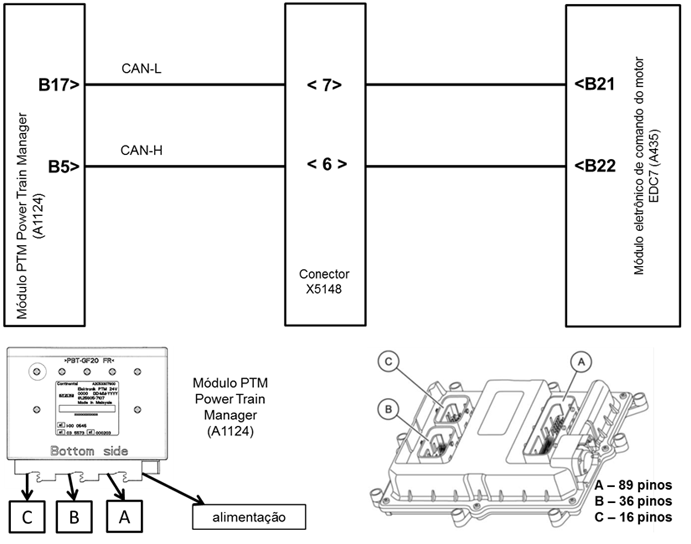
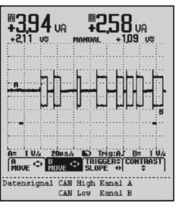

|

Descrição da Falha
Mensagem 2 da PTM na rede CAN com falha no sinal.
Indicação de Falha
Luz de alerta acende constantemente
em vermelho com símbolo  e ativa o alarme sonoro
curto, com o veículo andando ou parado. e ativa o alarme sonoro
curto, com o veículo andando ou parado.
A LIM permanece desligada.
Estratégia de Monitoramento
O módulo EDC7 monitora as mensagens enviadas da PTM (Power Train Manager) pela rede M-CAN.
Efeito da Falha
O motor ficará em marcha lenta e com o pedal do acelerador desabilitado (modo Stand Alone).
Possíveis Falhas
FMI 8: Falha no sinal de mensagem 2 da
PTM (Power train Manager) na rede CAN .
Aviso
  Para
a nova geração dos módulos de comando EDC7 C32, não está mais previsto
testar a rede CAN com a resistência de 120 Ohms aplicada no fim do
circuíto. A resistência de fim de circuíto foi substituída internamente
no módulo de comando EDC por uma de circuito "Resistência Dinâmica de
chaveamento RC". Isto significa que o CAN do Motor (M-CAN) não pode ser
mais medido no módulo de comando conectado diretamente no PTM (Power
Train Management), pois são medidos 120 Ohm ao invés dos 60 Ohm
esperados e por consequência será interpretado pelo módulo como um
cabeamento com defeito. Portanto, as medições, só podem ser realizadas
com o módulo de comando EDC7 desconectado (conectores soltos), ignição
desligada e caixa de testes eletroeletrônicos conectada ou por um
osciloscópio! Para
a nova geração dos módulos de comando EDC7 C32, não está mais previsto
testar a rede CAN com a resistência de 120 Ohms aplicada no fim do
circuíto. A resistência de fim de circuíto foi substituída internamente
no módulo de comando EDC por uma de circuito "Resistência Dinâmica de
chaveamento RC". Isto significa que o CAN do Motor (M-CAN) não pode ser
mais medido no módulo de comando conectado diretamente no PTM (Power
Train Management), pois são medidos 120 Ohm ao invés dos 60 Ohm
esperados e por consequência será interpretado pelo módulo como um
cabeamento com defeito. Portanto, as medições, só podem ser realizadas
com o módulo de comando EDC7 desconectado (conectores soltos), ignição
desligada e caixa de testes eletroeletrônicos conectada ou por um
osciloscópio!
Registros de Falhas em Outros
Módulos de Comando
Não.
Considerar os esquemas
elétricos do veículo
| Verificação
|
Medição |
Eliminação da
Falha |
|
Módulo de Comando EDC7
|
Utilize o Tester Box e consulte o
manual Verificação EDC7 C32:
Medir a resistência entre os pinos B21
(CAN-L) e B22(CAN-H)
Valor nominal:
~120 Ω
|
– Verificar a
tensão de alimentação
– Verificar os cabos
quanto rompimento ou oxidação
– Verificar as
conexões quanto a mau contato ou pinos tortos
– Em cerca de 0 Ω,
curto-circuito de CAN-H para CAN-L
– Caso nenhuma falha
seja verificada, substituir a EDC7
|
Rede
M- CAN (EDC7 - PTM)
|
Valor nominal:
Ver a curva do osciloscópio
|

CAN High: Canal A
CAN-Low: Canal B
Tester Box

|